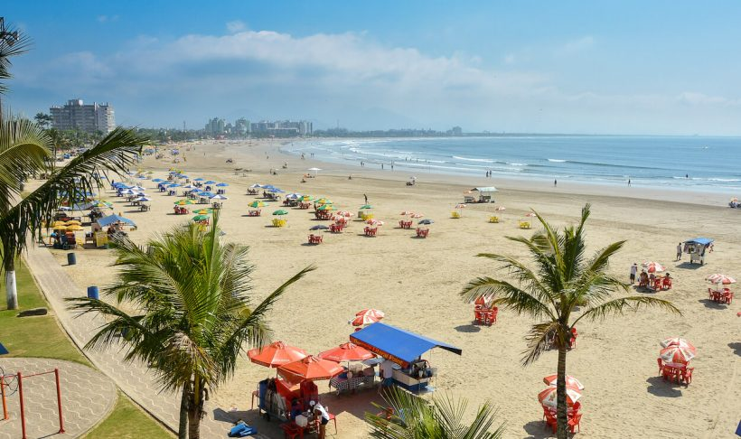
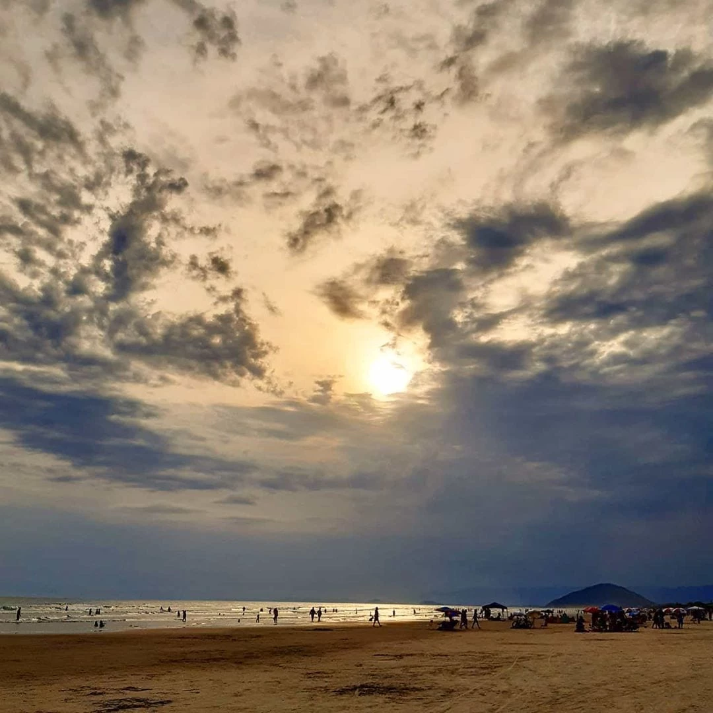

Praia da Enseada

A Praia da Enseada fica no centro comercial de Bertioga e foi a primeira a ter sua orla reurbanizada com o projeto do renomado arquiteto Ruy Ohtake. Com 12 km de extensão, suas águas dependem da época do ano. Geralmente são tranquilas, ótimas para relaxar em meio à natureza.
Há também o conhecido “Cantão do Indaiá”, que é o final da Praia da Enseada, com águas calmas, ideal para a prática de esportes náuticos e com boa acessibilidade para cadeirantes.
Como chegar
Distante 10 km ao sul do Centro de Ubatuba, a Praia da Enseada tem acesso por ruas de terra a partir da BR-101. Há várias vias que levam à praia e em todas elas é possível chegar à faixa de areia. O estacionamento é nas ruas de terra.
Praia de Boraceia

A Praia de Boraceia é a última de Bertioga e faz divisa com São Sebastião, marcando a porta de entrada para o litoral norte de São Paulo. Ela conta com cerca de 5 km de faixa de areia, cercada por um marzão lindo, com ondas moderadas e águas rasas, além de uma boa estrutura para comer e beber. No Canto do Itaguá, o visitante pode ter um contato com a cultura caiçara local
Como Chegar
Situada no deslumbrante litoral norte paulista, a praia de Boracéia fica a 134 km de São Paulo – SP, a 13 km da praia de Guaratuba e a 29 km da praia de Indaiá. Saindo da capital paulista, o viajante seguirá pela BR-101 (rodovia Rio Santos) até o km 190. A estrada é toda asfaltada e muito bem sinalizada.
Praia de Itaguaré

A Praia de Itaguaré é o melhor destino em Bertioga para quem deseja estar rodeado de natureza intocada. Ela é preservada por lei com a criação do Parque Estadual Restinga de Bertioga (Perb) e sua área verde realmente impressiona. Não há muita estrutura por perto, como comércios ou condomínios, o que a torna ainda mais natural. Ainda assim, o mar aberto é calmo, tendo mais movimento no verão.
Como chegar
A Praia de Itaguaré tem acessos pela estrada, pelo mar e pela foz do rio. Como chegar à praia pelo mar ou pelo rio exige algum tipo de embarcação ou jet ski, vamos indicar as rotas mais comuns.Pela rodovia Rio-Santos está o primeiro acesso pelo bairro São Lourenço.